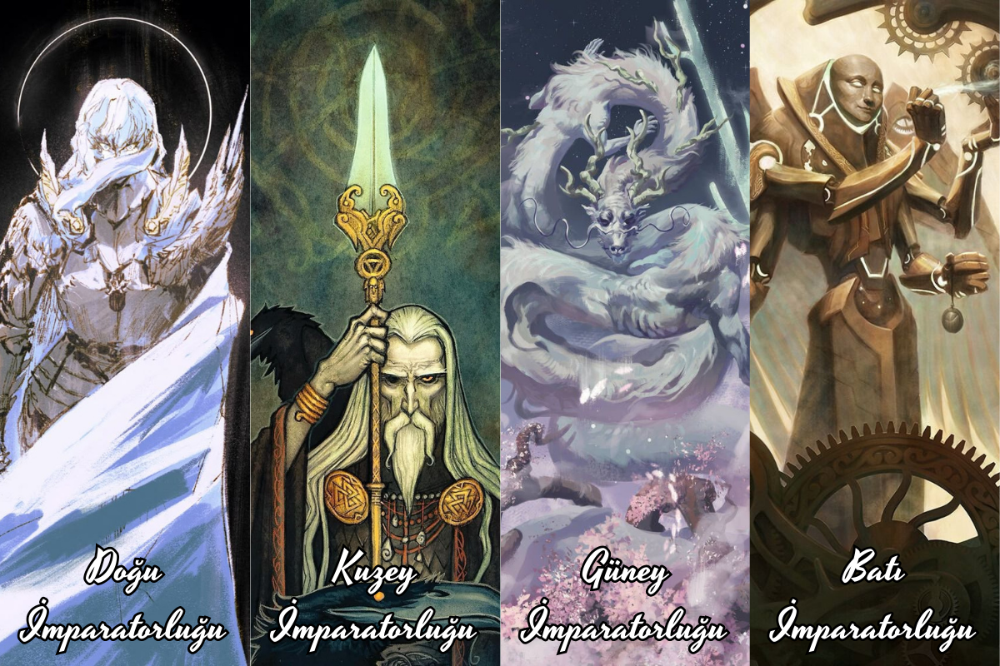

Eski çağlardan beri Valtheria diyarları dört büyük imparatorluk tarafından yönetilmektedir. Bu imparatorluklar; Doğu, Kuzey, Güney ve Batı İmparatorlukları olarak bilinir. Her biri farklı kültürlere, güçlü liderlere ve derin tarihlere sahiptir. Bu sayfada, dilediğiniz imparatorluğa tıklayarak detaylı bilgiye ulaşabilirsiniz.
İstediğiniz imparatorluktan bilgi almak için imparatorunun üzerine tıklayınız.
